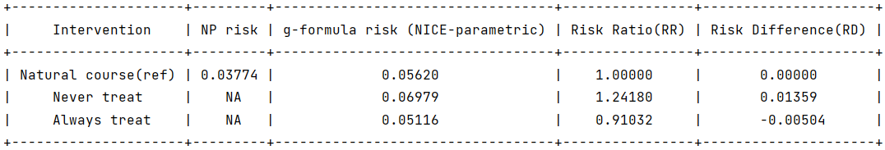

Visit process
When the data are not recorded at regular intervals but rather are recorded everytime the patient visits the clinic, the times at which the time-varying covariates are measured will vary by subject. In this setting, it is typical to construct the data such that (i) at a time when there is no visit/measurement, the last measured value of a covariate is carried forward, and (ii) a subject is censored after a certain number of consecutive times with no visit/measurement 1 , 2.
In pygformula, the deterministic knowledge (i) and (ii) can be incorporated via the argument ‘‘visitprocess’’. Each vector in ‘‘visitprocess’’ contains three parameters that attach a visit process to one covariate. The first parameter is the name of a time-varying indicator in the input data set of whether a covariate was measured in each interval (1 means there is a visit/measurement, 0 means there is no visit/measurement). The second parameter is the name of the covariate. The third parameter is the maximum number s of missed measurements of this covariate allowed since the last measurement before a subject is censored.
For the visit indicator, in the fitting step, the probability of a visit is estimated only using records where the sum of consecutive missed visits through previous k-1 time points is less than the maximum number of consecutive missed visits s. Then in the simulation step, if the sum of consecutive missed visits through previous k-1 time points is less than s, then the visit indicator is simulated from a distribution based on this estimate; otherwise, the visit indicator is set to 1 so as to eliminate subjects with more than s consecutive missed visits. For the covariate, in the fitting step, the conditional mean of the covariate will be estimated only for data records where there is a current visit. If the visit indicator equals 1, then in simulation step, the value of the dependent covariate will be generated from a distribution based on this estimate; otherwise, the last value is carried forward.
The argument for visit process:
Arguments |
Description |
|---|---|
visitprocess |
(Optional) List of lists. Each inner list contains its first entry the covariate name of a visit process; its second entry the name of a covariate whose modeling depends on the visit process; and its third entry the maximum number of consecutive visits that can be missed before an individual is censored. |
covnames = ['visit_cd4', 'visit_rna', 'cd4_v', 'rna_v', 'everhaart']
covtypes = ['binary', 'binary', 'normal', 'normal', 'binary']
covmodels = ['visit_cd4 ~ lag1_everhaart + lag_cumavg1_cd4_v + sex + race + month',
'visit_rna ~ lag1_everhaart + lag_cumavg1_rna_v + sex + race + month',
'cd4_v ~ lag1_everhaart + lag_cumavg1_cd4_v + sex + race + month',
'rna_v ~ lag1_everhaart + lag_cumavg1_rna_v + sex + race + month',
'everhaart ~ lag1_everhaart + cd4_v + rna_v + sex + race + month']
visitprocess = [['visit_cd4', 'cd4_v', 3], ['visit_rna', 'rna_v', 3]]
g = ParametricGformula(..., covnames = covnames, covtypes = covtypes, covmodels = covmodels, visitprocess = visitprocess, ...)
Here is an example in clinical cohorts of HIV-positive patients, ‘‘cd4_v’’ is a time-varying covariate of CD4 cell count measurement, the visit indicator ‘‘visit_cd4’’ indicats whether the CD4 cell count measurements were taken in interval k. 3 means that the data is constructed such that the subjects are censored once they have not had CD4 measured for 3 consecutive intervals. Note that for the visit indicator ‘‘visit_cd4’’, it should come before the dependent covariate ‘‘cd4_v’’ and be assigned the ‘‘binary’’ covariate type in ‘‘covtypes’’.
Running example:
import pygformula
from pygformula import ParametricGformula
from pygformula.parametric_gformula.interventions import static
from pygformula.data import load_visit_process
obs_data = load_visit_process()
time_name = 'month'
id = 'id'
covnames = ['visit_cd4', 'visit_rna', 'cd4_v', 'rna_v', 'everhaart']
covtypes = ['binary', 'binary', 'normal', 'normal', 'binary']
covmodels = ['visit_cd4 ~ lag1_everhaart + lag_cumavg1_cd4_v + sex + race + month',
'visit_rna ~ lag1_everhaart + lag_cumavg1_rna_v + sex + race + month',
'cd4_v ~ lag1_everhaart + lag_cumavg1_cd4_v + sex + race + month',
'rna_v ~ lag1_everhaart + lag_cumavg1_rna_v + sex + race + month',
'everhaart ~ lag1_everhaart + cd4_v + rna_v + sex + race + month']
basecovs = ['sex', 'race', 'age']
visitprocess = [['visit_cd4', 'cd4_v', 3], ['visit_rna', 'rna_v', 3]]
outcome_name = 'event'
ymodel = 'event ~ cd4_v + rna_v + everhaart + sex + race + month'
time_points = np.max(np.unique(obs_data[time_name])) + 1
int_descript = ['Never treat', 'Always treat']
g = ParametricGformula(obs_data = obs_data, id = id, time_name = time_name,
visitprocess = visitprocess,
int_descript = int_descript,
Intervention1_everhaart = [static, np.zeros(time_points)],
Intervention2_everhaart = [static, np.ones(time_points)],
covnames=covnames, covtypes=covtypes,
covmodels=covmodels, basecovs = basecovs,
outcome_name=ou tcome_name, ymodel=ymodel, outcome_type='survival')
g.fit()
Output:

- 1
Hernán MA, McAdams M, McGrath N, Lanoy E, Costagliola D. Observation plans in longitudinal studies with time-varying treatments. Statistical Methods in Medical Research 2009;18(1):27-52.
- 2
Young JG, Cain LE, Robins JM, O’Reilly E, Hernán MA. Comparative effectiveness of dynamic treatment regimes: an application of the parametric g-formula. Statistics in Biosciences 2011; 3:119-143.